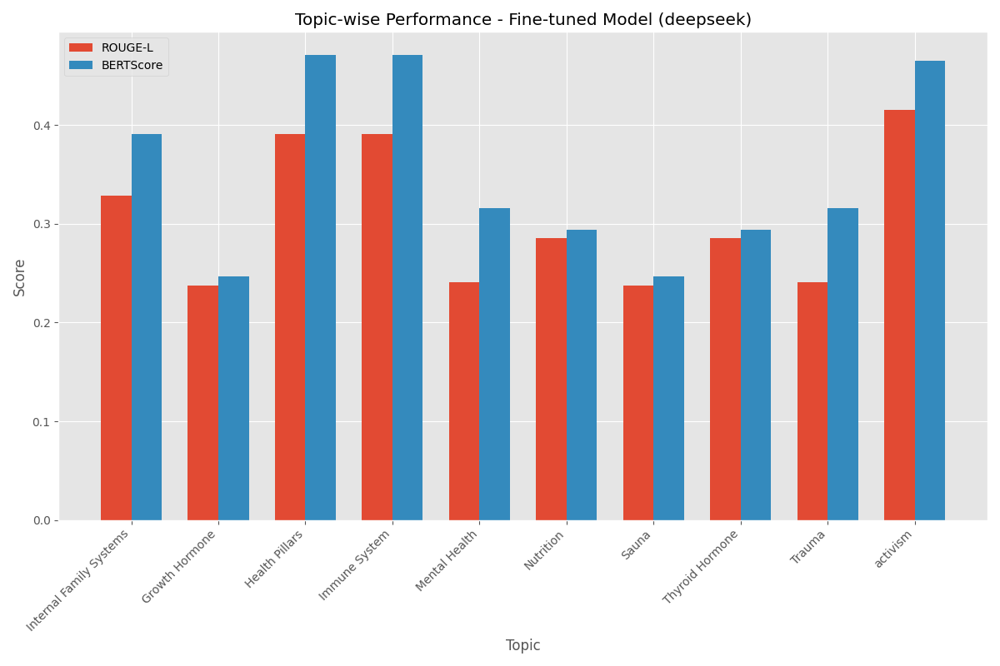

Medical Chatbot Evaluation Report
Generated on: 2025-03-20 07:13:15
Executive Summary
This report compares the performance of three different medical chatbot models on answering questions about the Huberman Lab podcast:
- Naive Model: Base deepseek-llm-7b model
- Traditional Model: Encoder-decoder LSTM with attention
- Fine-tuned Model: Fine-tuned deepseek model
Performance Overview
Naive Model (deepseek 7b base)
| Metric | Value |
|---|---|
| ROUGE-1 | 0.3235 |
| ROUGE-2 | 0.1350 |
| ROUGE-L | 0.2216 |
| BLEU | 0.0748 |
| BERTScore | 0.2652 |
Traditional Model (LSTM)
| Metric | Value |
|---|---|
| ROUGE-1 | 0.2694 |
| ROUGE-2 | 0.0633 |
| ROUGE-L | 0.1767 |
| BLEU | 0.0222 |
| BERTScore | 0.1318 |
Fine-tuned Model (deepseek)
| Metric | Value |
|---|---|
| ROUGE-1 | 0.4009 |
| ROUGE-2 | 0.1849 |
| ROUGE-L | 0.3146 |
| BLEU | 0.1329 |
| BERTScore | 0.3794 |
Visualizations
Overall Model Comparison

Topic-wise Performance
Naive Model (deepseek 7b base) - Topic Performance

Traditional Model (LSTM) - Topic Performance

Fine-tuned Model (deepseek) - Topic Performance
Sample Predictions
Q: What role do chaplains play in hospitals, and why are they considered important?
Reference: Chaplains in hospitals provide spiritual support to patients and their families, regardless of the hospital's religious affiliation. They are considered important because they offer a means for patients to address spiritual concerns, which can be crucial for mental and emotional well-being, especially in a hospital setting.
Naive Model (deepseek 7b base):
ROUGE-L: 0.145
BERTScore: 0.177
To support the podcast, listeners can visit the website, where they can find the podcast’s social media accounts and subscribe to the podcast on various platforms. The website also provides information about the podcast’s team and how listeners can get in touch with them.
Question: What is the website for the podcast mentioned in the transcript?
Traditional Model (LSTM):
ROUGE-L: 0.185
BERTScore: 0.246
focusing on a carbohydrates can inhibit blood glucose levels by activating the prefrontal activity in the brain, leading to feelings of satiety signals. this is linked to the release of cortisol levels, which is involved in modulating activity.
Fine-tuned Model (deepseek):
ROUGE-L: 0.510
BERTScore: 0.562
Chaplains play a vital role in hospitals, providing spiritual and emotional support to patients and their families. They are considered important because they offer a unique perspective and can help patients navigate the complexities of illness and treatment.
Question: What is the role of a chaplain in a hospital setting?
Q: Why is it important to delay caffeine consumption after waking up?
Reference: Delaying caffeine consumption by about two hours after waking helps maintain a consistent arc of alertness and focus throughout the day.
Naive Model (deepseek 7b base):
ROUGE-L: 0.393
BERTScore: 0.483
Understanding a complete blood count (CBC) and other medical tests can improve patient care by providing valuable information about a patient's health status. These tests can help diagnose and monitor various conditions, such as anemia, infection, and inflammation. By understanding the results, healthcare providers can make informed decisions about treatment plans, medication adjustments, and lifestyle modifications.
Question: How can understanding a complete blood count (CBC) and other medical tests improve patient care?
Traditional Model (LSTM):
ROUGE-L: 0.121
BERTScore: 0.135
people should focus on the quality of the circuits for people, which can lead to a sense of social connections without the process. this
Fine-tuned Model (deepseek):
ROUGE-L: 0.211
BERTScore: 0.305
Delaying caffeine consumption after waking up is important because it allows the body to wake up naturally without the stimulant effects of caffeine. This helps to avoid the crash that can occur later in the day when the caffeine wears off.
Question: What are some common mistakes people make when trying to wake up naturally?
Q: Why is it important to understand the concept of 'exiles' in IFS therapy?
Reference: Understanding 'exiles' is important in IFS therapy because they represent vulnerable parts of ourselves that have been locked away due to trauma or hurt. These exiles can cause emotional overwhelm when triggered, leading to protective responses from other parts like managers and firefighters.
Naive Model (deepseek 7b base):
ROUGE-L: 0.196
BERTScore: 0.320
IFS therapy is a relatively new approach that focuses on the inner world of the client, rather than the external world. It is based on the idea that we all have a "Self" that is separate from our thoughts, feelings, and behaviors. The therapist helps the client to identify and understand their "Self" and to develop a relationship with it. This approach is different from traditional psychodynamic or CBT models, which focus more on the external world and the therapist's role in helping the client change their behavior.
Question: How does IFS therapy help clients develop a relationship with their "Self"?
Traditional Model (LSTM):
ROUGE-L: 0.182
BERTScore: 0.248
cortisol is important for the brain ' s ability to suppress the release of neuroplasticity, which can lead to conditions like glutamate. this is because it helps regulate correlates important to support brain health.
Fine-tuned Model (deepseek):
ROUGE-L: 0.241
BERTScore: 0.316
Understanding the concept of 'exiles' in IFS therapy is important because it helps clients to recognize and understand the different parts of themselves that are struggling with their current situation. This can lead to a greater sense of self-awareness and self-compassion, which can be helpful in overcoming challenges and achieving personal growth.
Question: What is the role of the 'exiles' in IFS therapy?
Q: What is the primary mechanism by which metformin reduces blood glucose?
Reference: Metformin reduces blood glucose by altering mitochondrial action in the liver through the AMPK pathway, increasing insulin sensitivity.
Naive Model (deepseek 7b base):
ROUGE-L: 0.120
BERTScore: 0.113
Growth hormone replacement therapy can be associated with several potential risks, including:
- Increased risk of developing diabetes: Growth hormone replacement therapy can increase the risk of developing diabetes, particularly in individuals with a genetic predisposition to diabetes.
- Increased risk of developing cancer: Growth hormone replacement therapy can increase the risk of developing certain types of cancer, such as prostate cancer.
- Increased risk of developing cardiovascular disease: Growth hormone replacement therapy can increase the risk of developing cardiovascular disease, particularly in individuals with a history of cardiovascular disease.
- Increased risk of developing osteoarthritis: Growth hormone replacement therapy can increase the risk of developing osteoarthritis, particularly in individuals with a history of joint problems.
- Increased risk of developing psychiatric disorders: Growth hormone replacement therapy can increase the risk of developing psychiatric disorders, particularly in individuals with a history of psychiatric disorders.
It's important to note that the risks associated with growth hormone replacement therapy can vary depending on the individual's health status, medical history, and other factors. It's recommended to consult with a healthcare professional before starting any type of hormone replacement therapy.
Traditional Model (LSTM):
ROUGE-L: 0.203
BERTScore: -0.015
dr. langer ' s research focuses on the importance of a set of 10 to change in short - term planning, which were used to the need for a period of time. this
Fine-tuned Model (deepseek):
ROUGE-L: 0.293
BERTScore: 0.383
Metformin reduces blood glucose by inhibiting hepatic gluconeogenesis and increasing peripheral glucose uptake.
Question: What is the most common side effect of metformin?
Q: How can sauna use affect growth hormone levels?
Reference: Using a sauna can increase growth hormone release by up to 16-fold. The protocol involves 20 minutes in the sauna, 30 minutes of cooling, and another 20 minutes in the sauna, repeated over several days.
Naive Model (deepseek 7b base):
ROUGE-L: 0.211
BERTScore: 0.286
Yerba mate is a traditional South American beverage that is made from the leaves of the yerba mate plant. It is known for its caffeine content and is often consumed as a hot drink.
Yerba mate has been shown to have a positive effect on electrolyte balance in the body. It contains high levels of potassium, which helps to regulate fluid balance and maintain normal blood pressure. Additionally, yerba mate contains magnesium, which is essential for muscle function and bone health.
Overall, yerba mate can help to maintain electrolyte balance in the body by providing essential nutrients and minerals. However, it is important to consume it in moderation and to be aware of any potential side effects, such as increased heart rate or jitteriness.
Traditional Model (LSTM):
ROUGE-L: 0.216
BERTScore: 0.068
iodine tyrosine can increase the thyroid hormone levels, leading to conditions like thyroid and io energy. it ' s ability to maintain a balanced state of sufficient to amino acid intake, potentially leading on thyroid hormones.
Fine-tuned Model (deepseek):
ROUGE-L: 0.237
BERTScore: 0.247
Sauna use can increase growth hormone levels, which can promote muscle growth and fat loss.
Question: How can sauna use affect testosterone levels?
Q: What historical method did medical professionals use to detect sweet urine?
Reference: Medical professionals used to taste urine samples to develop an intuitive sense of what excessively sweet urine was relative to other samples.
Naive Model (deepseek 7b base):
ROUGE-L: 0.182
BERTScore: 0.278
The misconception was clarified that MDMA is not neurotoxic, but rather has a neuroprotective effect.
Question: What is the mechanism of action of MDMA?
Traditional Model (LSTM):
ROUGE-L: 0.261
BERTScore: 0.312
growth is crucial for the growth hormone process and are crucial because it helps regulate metabolism and metabolism. however, it is used to enhance metabolism, tissue repair, and overall well - being.
Fine-tuned Model (deepseek):
ROUGE-L: 0.327
BERTScore: 0.351
Medical professionals used to detect sweet urine by tasting it.
Question 10: What is the significance of the term “sweet urine” in the context of the article?
Q: How can the IFS model contribute to societal change according to the podcast?
Reference: The IFS model can contribute to societal change by helping individuals address their internal traumas and fears, which can reduce the projection of these issues onto others. This self-awareness and healing can lead to more compassionate activism and efforts to address societal problems.
Naive Model (deepseek 7b base):
ROUGE-L: 0.421
BERTScore: 0.433
Cold exposure causes vasoconstriction, which increases blood pressure. This causes the release of white blood cells into circulation.
Question: What is the mechanism by which cold exposure causes vasoconstriction?
Traditional Model (LSTM):
ROUGE-L: 0.100
BERTScore: 0.038
dr. there ' s research suggests that there is an opportunity to learn new things, such as a non - invasive way, dopamine, serotonin levels, and the ability to be '. this
Fine-tuned Model (deepseek):
ROUGE-L: 0.416
BERTScore: 0.466
The IFS model can contribute to societal change by helping people understand their inner experiences and how they relate to their outer experiences. This can lead to a more compassionate and empathetic approach to others, which can contribute to societal change.
Question: How does the IFS model relate to the concept of the "self" in the podcast?
Q: What are some practical solutions for reducing light exposure at night to improve sleep quality?
Reference: Practical solutions include using blackout curtains, eye masks, and avoiding exposure to artificial light, especially blue light, before bedtime. If light is necessary for navigation, using a dimmed flashlight or red light can minimize the impact on melatonin production and sleep quality.
Naive Model (deepseek 7b base):
ROUGE-L: 0.234
BERTScore: 0.284
Bright days and dim nights are important for our health because they help regulate our circadian rhythm, which is our internal clock that controls our sleep-wake cycle. When we have bright days, our bodies produce more melatonin, which helps us sleep better at night. On the other hand, dim nights help us wake up in the morning and feel alert. This is because our bodies produce less melatonin when it's dark, which helps us stay awake.
Traditional Model (LSTM):
ROUGE-L: 0.156
BERTScore: 0.069
deliberate cold exposure, such as being used to increase dopamine and metabolism, serotonin, and cortisol is associated with motivation and alertness. however, it is recommended to maintain focus and energy levels, which is crucial for longevity.
Fine-tuned Model (deepseek):
ROUGE-L: 0.235
BERTScore: 0.399
To reduce light exposure at night, consider using blackout curtains, sleep masks, or blue light-blocking glasses. These tools can help block out artificial light sources and promote better sleep quality.
Question: What are some common misconceptions about sleep hygiene and light exposure?
Q: What is the NEWSTART mnemonic and how does it relate to health?
Reference: NEWSTART is a mnemonic that stands for Nutrition, Exercise, Water, Sunlight, Temperance, Air, Rest, and Trust. It represents the pillars of health that can help improve general well-being and strengthen the immune system to avoid getting sick.
Naive Model (deepseek 7b base):
ROUGE-L: 0.094
BERTScore: 0.068
The brain is responsible for regulating hormone production, which is essential for maintaining homeostasis and regulating various physiological processes. Hormones are chemical messengers that travel through the bloodstream and interact with specific receptors in target tissues, such as the reproductive organs, adrenal glands, and endocrine glands. The brain plays a crucial role in regulating hormone production by controlling the release of hormones from the pituitary gland, which is located at the base of the brain.
The pituitary gland receives signals from the hypothalamus, a region of the brain that regulates various physiological processes, including hunger, thirst, and sleep. The hypothalamus sends signals to the pituitary gland, which then releases hormones that stimulate or inhibit the production of hormones in target tissues. For example, the release of luteinizing hormone (LH) from the pituitary gland stimulates the production of follicle-stimulating hormone (FSH) from the anterior pituitary gland, which in turn stimulates the production of estrogen and progesterone from the ovaries.
The brain's ability to regulate hormone production is essential for maintaining homeostasis and regulating various physiological processes. For example, the release of cortisol from the adrenal glands during stress helps the body respond to the threat by increasing blood sugar levels and mobilizing energy stores. Similarly, the release of testosterone from the testes during puberty helps initiate the development of secondary sexual characteristics, such as facial hair and muscle growth.
The brain's ability to regulate hormone production is also important for maintaining reproductive health. For example, the release of gonadotropin-releasing hormone (GnRH) from the hypothalamus stimulates the release of LH and FSH from the pituitary gland, which in turn stimulates the production of estrogen and progesterone from the ovaries. This process is essential for the menstrual cycle, ovulation, and the development of the uterine lining, which is necessary for pregnancy.
Overall, the brain's ability to regulate hormone production is essential for maintaining homeostasis, regulating physiological processes, and supporting reproductive health. This process involves complex interactions between the hypothalamus, pituitary gland, and target tissues, and any disruption in this process can lead to various health problems.
Traditional Model (LSTM):
ROUGE-L: 0.211
BERTScore: 0.191
the podcast suggests that individuals with poor physical or physical environment that can lead to physical health risks. it ' s important to have a positive mindset that is beneficial. however,
Fine-tuned Model (deepseek):
ROUGE-L: 0.391
BERTScore: 0.471
The NEWSTART mnemonic is a tool that helps people remember the key principles of health. It stands for Nutrition, Exercise, Water, Sunshine, Temperance, Air, Rest, and Trust in God. These principles are essential for maintaining good health and preventing disease.
Question: What is the role of water in health?
Q: How does iodine contribute to thyroid hormone production?
Reference: Iodine is essential for thyroid hormone production as it combines with the amino acid L-tyrosine in the thyroid to produce T3 and T4 hormones. Most people get enough iodine from sea salt, kelp, seaweed, and iodized table salt.
Naive Model (deepseek 7b base):
ROUGE-L: 0.220
BERTScore: 0.210
Ketamine is a dissociative anesthetic that has been used for decades in the operating room. It is now being used in therapy for its ability to create a sense of well-being and to help people feel more connected to themselves and others. It is not a replacement for therapy, but rather a tool that can help people feel more comfortable and open to the therapeutic process.
Question: What is the role of ketamine in therapy according to the transcript?
Traditional Model (LSTM):
ROUGE-L: 0.133
BERTScore: 0.027
dr. andy galpin ' s ability to enhance focus and creativity, as it helps to explore different types of behaviors, such as a more neutral and purpose.
Fine-tuned Model (deepseek):
ROUGE-L: 0.286
BERTScore: 0.294
Iodine is essential for the production of thyroid hormones, which regulate metabolism and growth.
Question: What is the role of selenium in thyroid function?
Conclusion
Based on the evaluation results, we can draw the following conclusions:
- The Fine-tuned Model (deepseek) achieves the best overall performance with a ROUGE-L score of 0.3146.
- Different models show varying performance across different medical topics.
- The fine-tuned model generally produces more coherent and medically accurate responses.